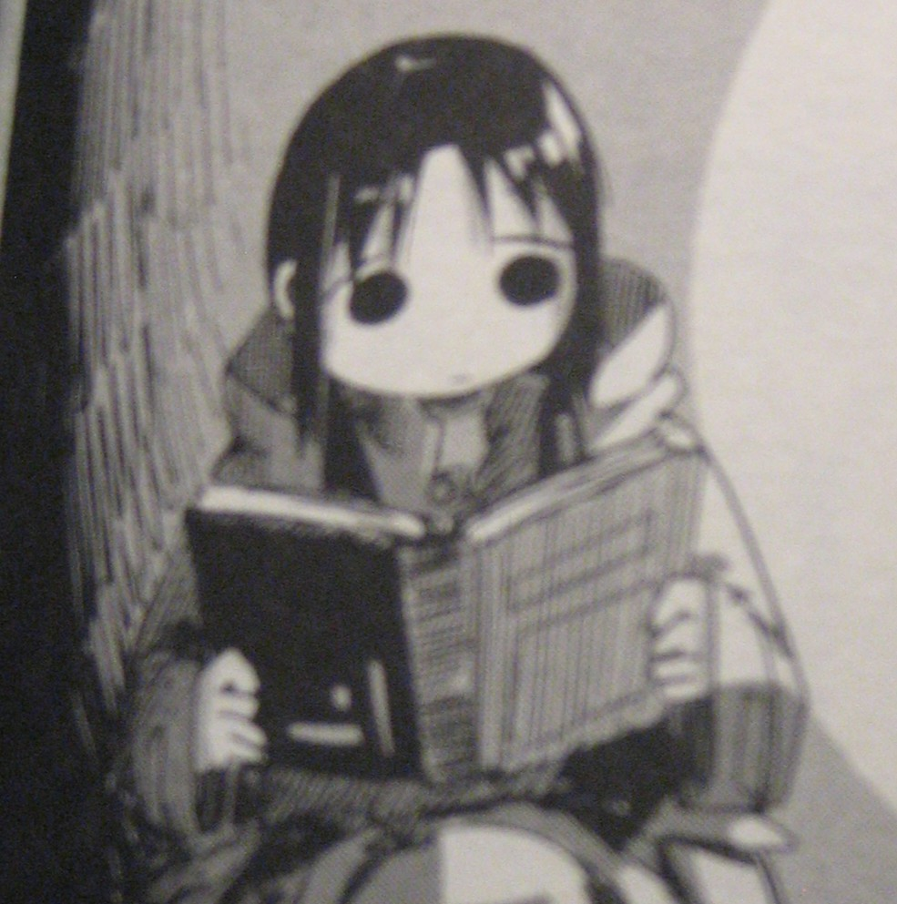
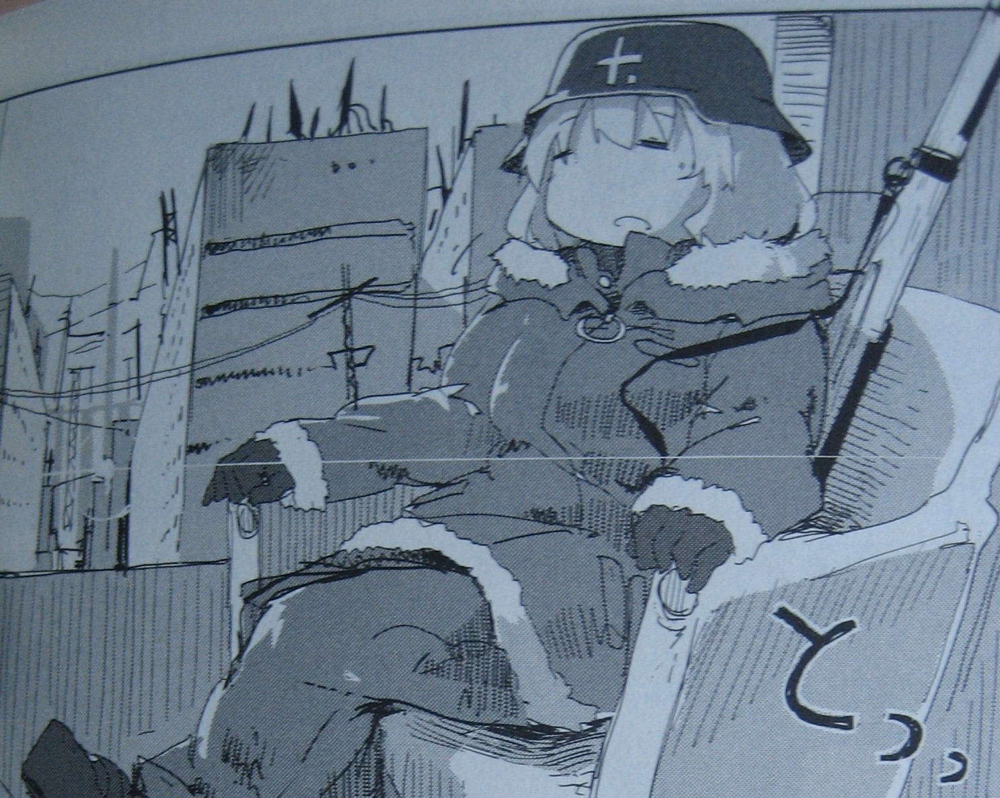
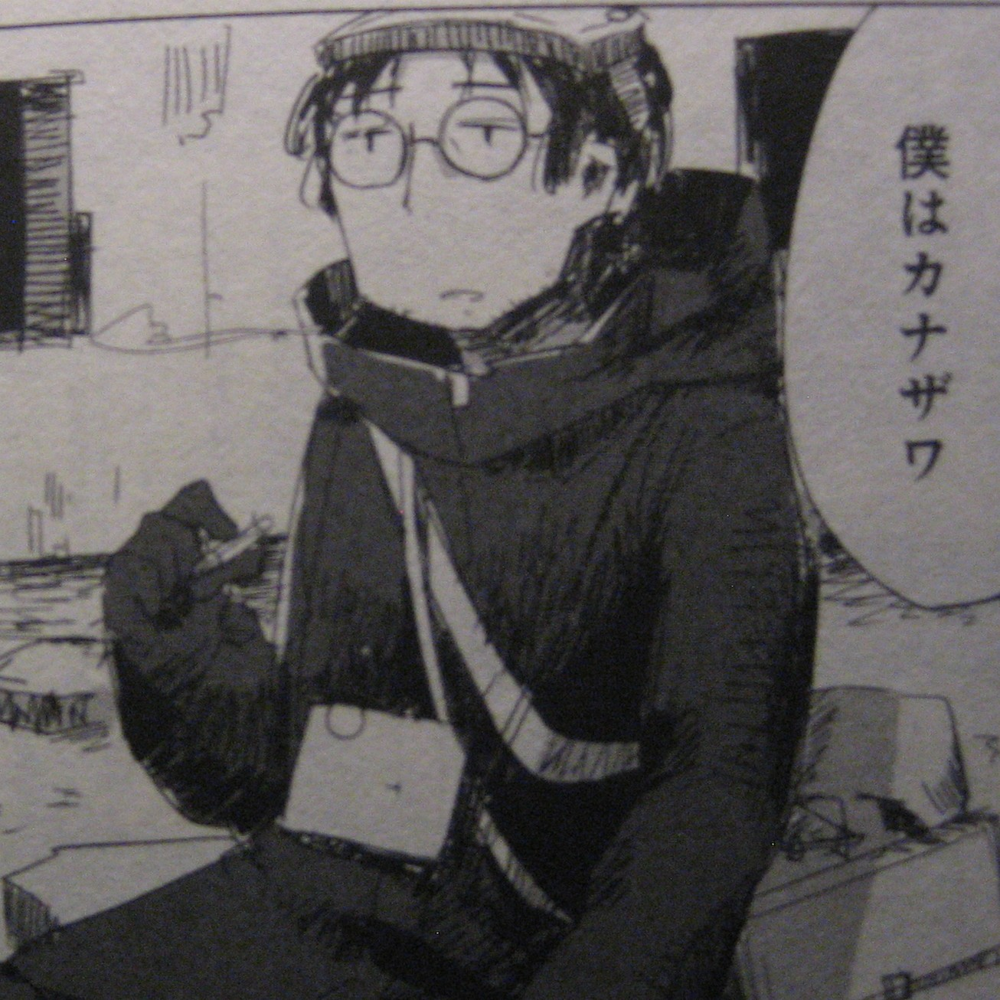
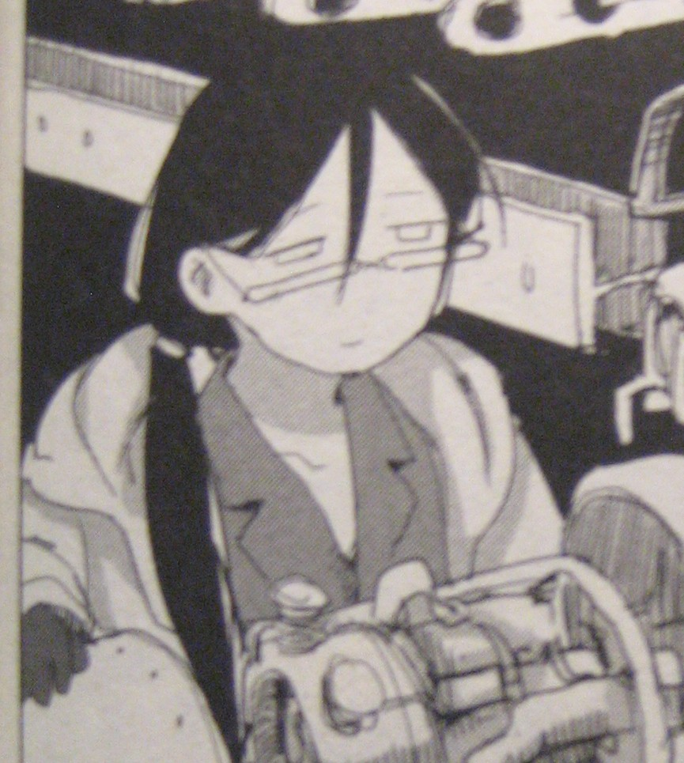

A young girl with long black pigtails navigates where she and Yuuri travel. She's usually serious but can get silly at times and she kind of beats up Yuuri playfully when she does something mean or bad to Chito. She enjoys reading and refers to Yuuri as "Yuu".

Yuuri is slightly older than Chito, (who she often calls Chii-chan) and carries a rifle. She loves food and is very silly and playful. She protects Chito and is also very cheerful.

Kanazawa-san creates maps, he mapped out large areas of the city and he helps guide Chito and Yuuri. He is kind and generous.

Ishii-san is a determined woman and engineer. She makes blueprints for her ideas and builds them from materials she has lying around. She's creative and intelligent.